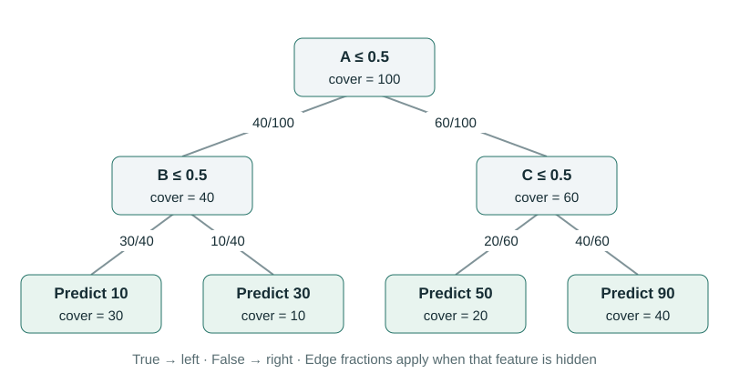
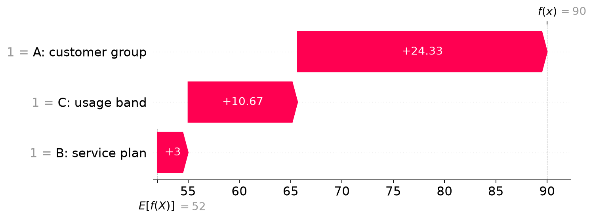

TreeSHAP: Start with One Small Tree
A decision tree predicts a customer’s monthly spending as 90. Following the branches tells us where that number came from. We would also like to answer a different question: how much did each input contribute to the difference between this prediction and a reference average?
TreeSHAP calculates Shapley values for tree models. We will build up the calculation with a tree small enough to check by hand. The same example will carry us from ordinary prediction to feature groups, efficient computation, repeated splits, and a working Python model.
If Shapley values are new to you, the credit-sharing chapter explains why we average contributions over different joining orders. Here, joining means revealing one feature’s value. We keep the fitted tree fixed throughout.
Read the tree before explaining it
Our invented model has three binary inputs. A is customer group, B is service plan, and C is usage band. Each takes the value 0 or 1. The labels make the example concrete; the tree and its spending values are teaching examples, not claims about customers.


Explain the row A = 1, B = 1, C = 1. At the root, A is greater than 0.5, so go right. C is also greater than 0.5, so go right again. The leaf predicts 90. B is not inspected on that particular route.
For this prediction, “follow A, then C” is a complete description of model execution. It is not yet a Shapley explanation. To calculate contributions, we must also ask what the tree would predict when some of these values have not been revealed.
Start with the reference average
The four leaves contain 30, 10, 20, and 40 reference rows. There are 100 rows altogether. When none of the customer’s inputs is known, use these proportions to average the leaf predictions:
This 52 is the baseline for our first explanation rule. It is an average model output, not automatically the average observed spending, and it is not the tree’s root split threshold. We want to share the difference 90 − 52 = 38 among A, B, and C.
The rule used in these first chapters is called tree-path-dependent. It uses weights stored in the tree to decide how much of an unknown input goes down each branch. Part 5 will compare it with using an explicit background dataset.
At a hidden split, keep both possibilities
If the split feature is known, follow the explained customer’s value, just as in ordinary prediction. If it is hidden, evaluate both children and average their results using child cover divided by parent cover.
Reveal A = 1 but keep C hidden. We go right at A, then average the two C leaves. Their covers are 20 and 40 out of 60, so the result is:
Now reveal C = 1 as well. There is no need to average the C leaves: the output becomes 90. In this reveal order, C contributes 90 − 76⅔ = 13⅓. If we reveal C before A, its contribution will be different. That is why one route through the tree cannot supply the whole Shapley calculation.
A hidden feature has not been replaced with zero or a missing-value marker. We are averaging possible routes for the explanation. A model’s treatment of an actual NaN input is a separate prediction rule.
Reveal the inputs yourself
Each checkbox below reveals that input’s value of 1. The customer, tree, and covers stay fixed. The percentages show how much weight reaches each leaf under the selected revealed group.
No inputs known: average prediction = 52.
Try revealing only B. The average rises from 52 to 58, even though B is absent from the customer’s final prediction route. While A is hidden, some reference weight still travels into the left subtree, where B matters. This is the reason B can receive a nonzero Shapley value.
The explanation we will derive
These are contributions to this model output, under this reference rule, for this row. They are not percentages, split counts, or estimates of how spending would change if we intervened on a customer’s plan.


A continuous route through the series
Read the next chapters in order for the derivation. If you already understand the algorithm, Part 7 contains a complete runnable example and the verification results.
- TreeSHAP: Start with One Small Tree — Follow a prediction, calculate its reference average, and see how hiding a feature changes the tree traversal.
- Calculate Tree SHAP Values by Hand — Work through all eight feature groups and all six reveal orders, including a feature outside the prediction path.
- How TreeSHAP Avoids Listing Every Feature Group — Derive leaf contributions and a polynomial dynamic program that preserves the full Shapley average.
- When a Tree Splits on the Same Feature Twice — Combine repeated split conditions correctly and connect that calculation to TreeSHAP’s extend and unwind operations.
- Choose What a Hidden Feature Means — Calculate path-dependent, background-replacement, and conditional explanations for the same correlated inputs.
- From One Tree to Forests, Boosting, and Interactions — Combine tree explanations in the model’s output units, then read interaction matrices and global summaries.
- Use TreeExplainer and Verify the Result — Run a complete random-forest example, compare two reference rules, and check the library against exhaustive masking.
- Check a TreeSHAP Explanation Before You Trust It — Audit output units, reference populations, repeated features, approximations, and the conclusions an explanation supports.
The algorithmic reference is Lundberg, Erion, and Lee’s Tree SHAP paper. The examples and figures here are original calculations; the downloadable scripts compare them with SHAP’s TreeExplainer. Start with the next chapter to see where every contribution comes from.